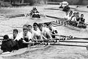
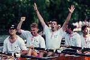

"On the second night, we holed our boat on a submerged log as we turned just before the start. The 4 minute gun went. Somehow we managed to get the boat out of the water and put some sticky tape over the hole, get it back into the water and make the start - we were about 3rd in the second division. All fine until Grassy, when the tape came off, we stopped almost dead and then sank!"
Every Lent and Easter term in Cambridge, large crowds line the Cam for the highlight of the College rowing calendar, the Bumps. A unique race format and the intensity of inter-College competition ensures excitement every time for participants and spectators alike.
The format of Bumps is the key to its excitement. Seventeen boats per division start in a long line a length and a half apart. The aim of the race is to try to make physical contact with the boat in front before being hit by the pursuing crew.
The Bumps races last four days. Crews that bump their opponents start ahead of them the next day. The starting order on the first day is the finishing order from corresponding competition the year before.

Once boats are involved in a bump, they must clear the river and allow the racing to continue. It is therefore possible to overbump, by catching the crew that started three places ahead once the two boats immediately in front have bumped out.
For the participants, Bumps provides an adrenalin rush like nothing else, whether it is caused by the thrill of hearing the cox's encouragement as you close on the crew in front, or by doing everything you can to keep ahead while watching a following crew just a few feet from your stern. For spectators, the fun of watching their friends uphold College honour, and the excitement of seeing fast-moving boats racing just metres apart, is a thrilling spectacle.
The nature of the Bumps format means that the race could last anywhere from 30 seconds to 10 minutes. You have to start out as if it was a 500 metre piece, and perhaps be forced to maintain that pace for 3 kilometres. Gaps between crews wax and wane throughout, but all the time there is the knowledge that a single mistake will cost you a place.

The prestige of being "head of the river" goes to the leading men's and ladies' crews from the Bumps... but there are rewards for other successful crews in every division. Four bumps in succession earns a crew the right to keep their blades, on which are painted the names of crew members and race results. Many bars and even College bedrooms around Cambridge proudly sport oars as a reminder of past rowing successes.
At the other end of the scale, crews bumped four times in a row are awarded wooden spoons, typically painted in the colours of their club and presented at boat club dinners the night after Bumps.